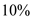

Step 1:
Draw the diagram of inverting amplifier.
Step 2:
Refer to equation (2.5) in the textbook.
Write the expression for closed loop gain of the inverting amplifier.

From Figure 1, the resistor is in shunt with a resistor
is in shunt with a resistor . Determine the equivalent resistance.
. Determine the equivalent resistance.
Write the closed loop gain of inverting amplifier.
Step 3:
Consider the gain error is  .
.
The value of open loop gain is,
…… (1)
Rearrange the equation as follows:
Therefore, the gain error is .
Step 4:
Consider the gain error is  .
.
Determine the value of open loop gain.

Therefore, the gain error is .
Step 5:
Consider the gain error is .
Determine the value of open loop gain.

Therefore, the gain error is .
Step 6:
For restoring the gain to its nominal value  , the condition is,
, the condition is,
…… (2)
Consider equation (1).
Substitute for in equation (2).
Step 7:
Determine the value of  for a gain error .
for a gain error .
Write the formula for gain error.

Therefore, the value of  is.
is.
Step 8:
Determine the value of for a gain error .
Write the formula for gain error.

Therefore, the value of  is.
is.
Step 9:
Determine the value of  for a gain error
for a gain error  .
.
Write the formula for gain error.
Therefore, the value of  is.
is.